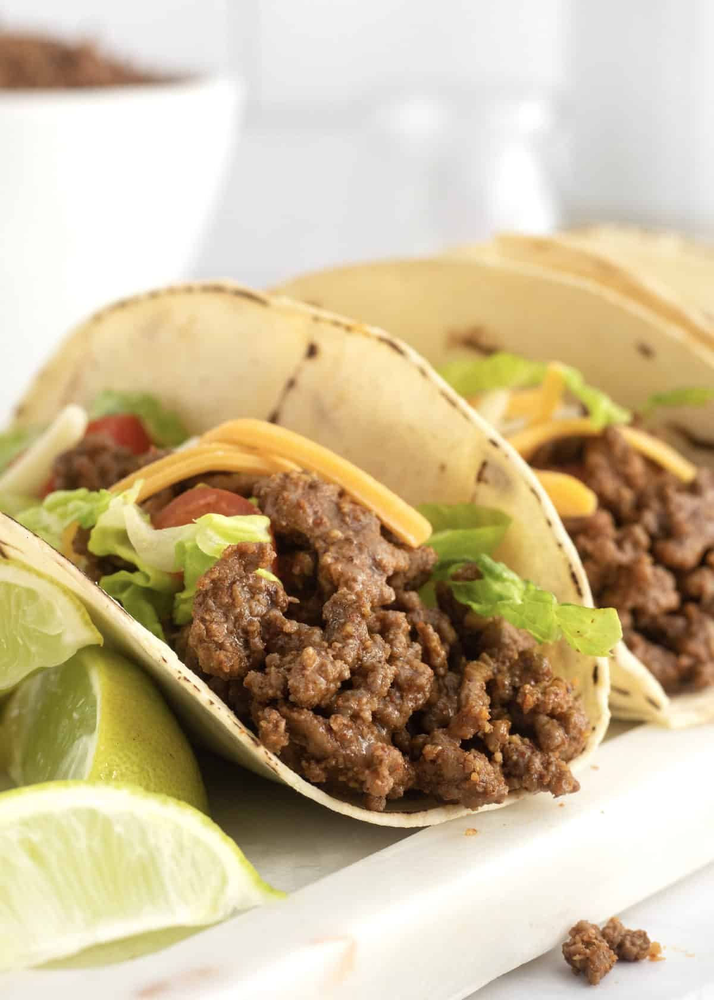

Odin Recipes
Beef Taco
Beef Taco

Here shows three homemade ground beef tacos arranged on a white marble surface. Three soft corn tortillas are folded and filled with seasoned, browned ground beef that has a rich, dark reddish-brown color from taco seasoning. Each taco is topped with shredded sharp cheddar cheese, along with fresh green shredded lettuce, and diced red tomatoes. A little bit of green lime are placed around the tacos, adding color and suggesting a fresh squeeze of lime, while a small bowl of extra seasoning or spice sits in the background.
Ingredients
- 1 pound lean ground beef (80/20 or 85/15)
- 1 tablespoon olive oil or vegetable oil
- 1 small onion, finely diced
- 2 cloves garlic, minced
- 1 to 1½ tablespoons chili powder
- 1 to 1½ teaspoons ground cumin
- ½ to 1 teaspoon salt
- ¼ teaspoon black pepper
- ½ cup tomato sauce (or 2 tablespoons tomato paste + ½ cup water/broth)
- Optional: 1 teaspoon cornstarch mixed with a little water (for thicker sauce)
Steps
- Mix the chili powder, cumin, salt, and pepper in a small bowl.
- Heat oil (if using) in a skillet over medium-high. Add ground beef and break it up; cook 5 to 7 minutes until browned. Drain excess fat if needed.
- If using, add diced onion and cook 3 to 4 minutes until soft, then add garlic for 30 seconds.
- Stir in the spice mix and cook 1 minute to bloom the flavors.
- Add tomato sauce (or paste + liquid). Simmer on medium-low for 5 to 10 minutes until thickened. Adjust salt/pepper if needed.
- Proceed with warming tortillas and assembling as before.